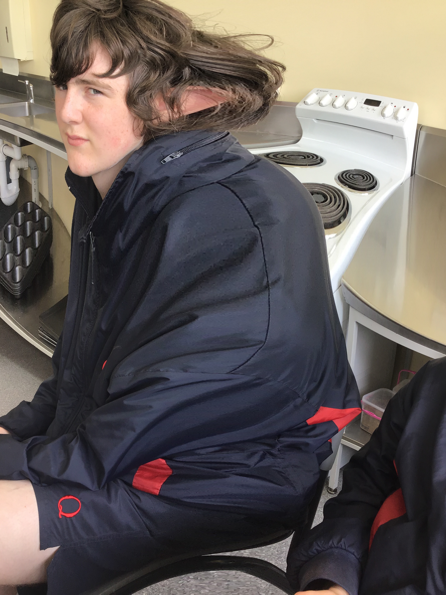

Max's Base
Nestled amidst a sprawling landscape, Max's Base stands as a mysterious enclave that captivates the imagination. This enigmatic place, veiled in secrecy and shrouded in whispers, evokes a sense of wonder and curiosity in all who stumble upon its name.
Max's Base is situated in an undisclosed location, hidden from prying eyes and shielded from the outside world. Its very existence sparks intrigue, beckoning adventurers, dreamers, and seekers of the unknown. Its exact purpose remains obscured, leaving ample room for speculation and conjecture.
Find us on google maps at Max's Base
Information
Max, a captivating enigma, is rumored to be the elusive owner of Max's Base, an enchanted refuge known to elves as "Aerendir." Legends speak of an ancient bond, granting Max the power to protect and guide this realm of hidden knowledge. Veiled in mystique, Max harnesses arcane forces, safeguarding the enigmatic secrets within Aerendir, ensuring their preservation for those who seek enlightenment.
Learn more about max here